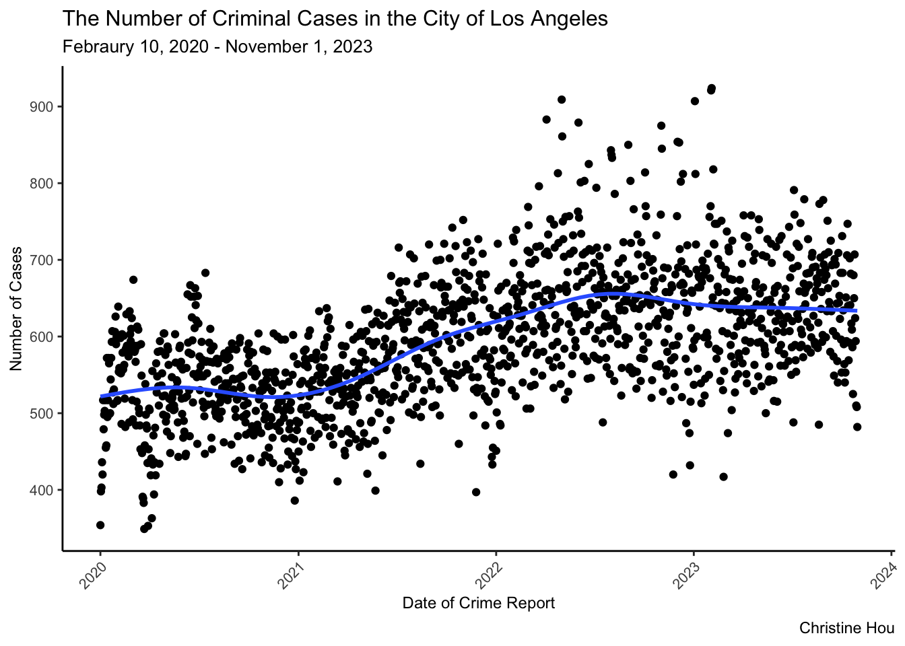
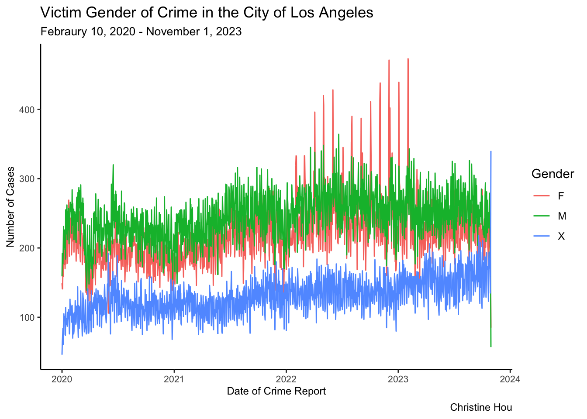
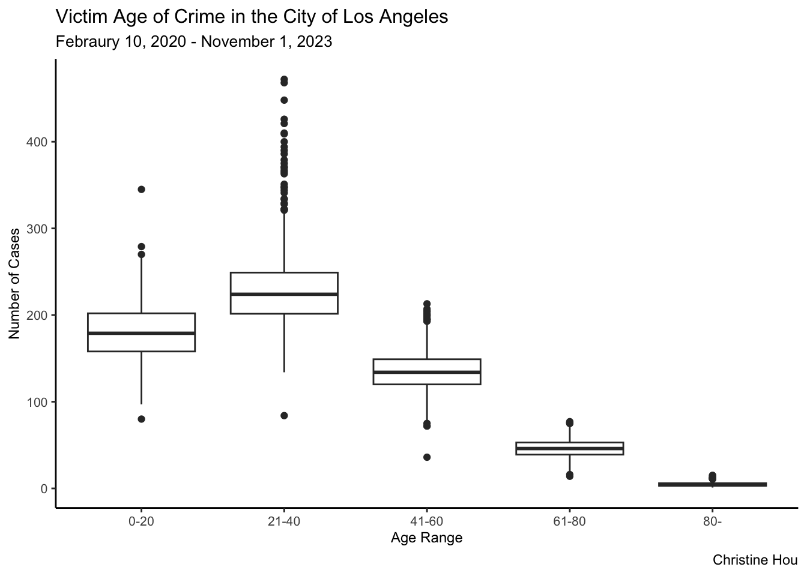
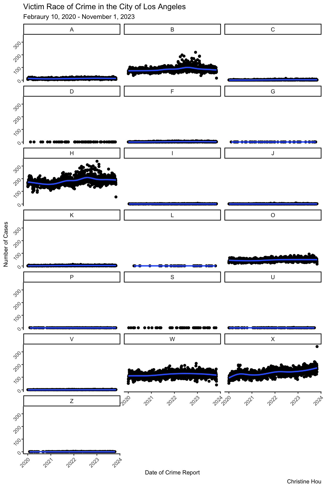

library(ggplot2)
library(dplyr)
library(tidyr)
library(readr)
library(lubridate)
library(forcats)Crime Data in Los Angeles
Febraury 10, 2020 to November 1, 2023
Introduction
The City of Los Angeles, a well-known and prosperous place in United States, attracts more people move in and settle down every year. It is common for every person to ask a question: Is the City of Los Angles a dangerous city, and what is the general distribution of crime incidents considering various factors? The safety evaluation before living in the area formally is extremely important for every future residents, and the evaluation can help policymakers make better polities to improve city infrastructure and protect current residents. Therefore, the data analysis of crime incidents in the City of Los Anegeles provided by LAPD (Los Angeles Police Department) would be really helpful. We all now that keeping safe is always on the top.
Data Information
This dataset comes from Los Angeles Open Data - Public Safety-Crime Data from 2020 to Present, and it includes the information about crimes happened since Febraury 10, 2020, provided by LAPD (Los Angeles Police Department). I downloaded the dataset and began to conduct the analysis on November 5, 2023, and becuase the website is updated weekly, the dataset I analyzed on my web page contains the crime information from Febraury 10, 2020 to November 1, 2023.
Note
I compressed the dataset Crime_Data_from_2020_to_Present_20231105.csv into data.zip, and uploaded to GitHub directory for convenience. If the dataset link above accidently expires, you can get access to the dataset by visiting my GitHub directory.
The dataset contains 830K rows and 28 columns, and the data dictionary is here.
Analysis
Pre-Analysis
Data Overview
First, read the data from data.zip file, and store it in local environment.
data <- read.csv(unz("data.zip", "Crime_Data_from_2020_to_Present_20231105.csv"), header = TRUE,sep = ",")Then, let’s have a brief overview of this dataset.
dim(data)[1] 829778 28colnames(data) [1] "DR_NO" "Date.Rptd" "DATE.OCC" "TIME.OCC"
[5] "AREA" "AREA.NAME" "Rpt.Dist.No" "Part.1.2"
[9] "Crm.Cd" "Crm.Cd.Desc" "Mocodes" "Vict.Age"
[13] "Vict.Sex" "Vict.Descent" "Premis.Cd" "Premis.Desc"
[17] "Weapon.Used.Cd" "Weapon.Desc" "Status" "Status.Desc"
[21] "Crm.Cd.1" "Crm.Cd.2" "Crm.Cd.3" "Crm.Cd.4"
[25] "LOCATION" "Cross.Street" "LAT" "LON" This dataset has approximately 830K rows and 28 columns, containing many useful information including crime report data, number of cases, crime area/age/sex/serious level/address, etc. There are many analysis possibilities using this dataset.
for (col in 1:ncol(data)) {
print(paste(colnames(data)[col], sum(is.na(data[col]))))
}[1] "DR_NO 0"
[1] "Date.Rptd 0"
[1] "DATE.OCC 0"
[1] "TIME.OCC 0"
[1] "AREA 0"
[1] "AREA.NAME 0"
[1] "Rpt.Dist.No 0"
[1] "Part.1.2 0"
[1] "Crm.Cd 0"
[1] "Crm.Cd.Desc 0"
[1] "Mocodes 0"
[1] "Vict.Age 0"
[1] "Vict.Sex 0"
[1] "Vict.Descent 0"
[1] "Premis.Cd 10"
[1] "Premis.Desc 0"
[1] "Weapon.Used.Cd 540459"
[1] "Weapon.Desc 0"
[1] "Status 0"
[1] "Status.Desc 0"
[1] "Crm.Cd.1 10"
[1] "Crm.Cd.2 768750"
[1] "Crm.Cd.3 827720"
[1] "Crm.Cd.4 829717"
[1] "LOCATION 0"
[1] "Cross.Street 0"
[1] "LAT 0"
[1] "LON 0"Some columns exist the NA values, and some character columns have empty strings without providing any useful information. Therefore, pay attention to these columns, and process the dataset using some filter functions to perform better analysis.
Data Analysis
Like what I mentioned in Introduction part, people are caring about the safety of living area. Therefore, in my analysis, I will focus on answering the question: what are the crime statistics in the City of Los Angeles?
How does the crime incidents change over time (2020-2023)?
data %>%
select(Date.Rptd,Crm.Cd) %>%
mutate(Date.Rptd = mdy(sub("(\\d{2}/\\d{2}/\\d{4}).*", "\\1", Date.Rptd))) %>%
arrange(Date.Rptd) %>%
group_by(Date.Rptd) %>%
summarize(cases = sum(Crm.Cd),.groups='drop') %>%
ggplot(aes(x = Date.Rptd, y = cases)) +
geom_point() +
geom_smooth(method = "gam", se = FALSE)+
labs(
x = "Year",
y = "Number of Cases",
title = "The Number of Criminal Cases in the City of Los Angeles (2020-2023)",
subtitle = "The criminal cases in the City of Los Angeles is increasing over time",
caption = "Christine Hou",
color = "Area Names"
) +
theme_classic() +
theme(
plot.title = element_text(size=12),
plot.subtitle = element_text(size=10),
legend.title = element_text(size=9),
legend.text = element_text(size=8),
axis.title = element_text(size = 9),
axis.text.x = element_text(size = 8,angle = 45, hjust = 1),
axis.text.y = element_text(size = 8)
)`geom_smooth()` using formula = 'y ~ s(x, bs = "cs")'
As we can see from the plot, the criminal cases in the Los Angeles is increasing over time from 2020 to 2023. There exists the fluctuations, but the general trend is increasing.
Now, it is the time to know more crime statistics.
What are the victim age (Vict.Age), sex (Vict.Sex) and race (Vict.Descent) distribution in the City of Los Angeles from 2020 to 2023?
- Victim Gender
The categories of gender and its abbreviation is here: https://data.lacity.org/Public-Safety/Crime-Data-from-2020-to-Present/2nrs-mtv8#:~:text=crime%20incident-,Columns,-in%20this%20Dataset
unique(data$Vict.Sex)[1] "F" "M" "X" "" "H" "-"Replace NA values, empty strings (““), and non-sense categories (”H”,“-”) into unknown category (“X”).
vic_sex = data %>%
mutate(Date.Rptd = mdy(sub("(\\d{2}/\\d{2}/\\d{4}).*", "\\1", Date.Rptd)),
Vict.Sex = ifelse(Vict.Sex %in% c("F","M","X"),Vict.Sex, "X")) %>%
mutate(Year = year(Date.Rptd)) %>%
arrange(Date.Rptd) %>%
select(Crm.Cd, Vict.Sex, Year) %>%
group_by(Vict.Sex,Year) %>%
summarise(cases = sum(Crm.Cd),.groups = 'drop')
vic_sex# A tibble: 12 × 3
Vict.Sex Year cases
<chr> <dbl> <int>
1 F 2020 37586753
2 F 2021 40668505
3 F 2022 46090340
4 F 2023 36839995
5 M 2020 39797406
6 M 2021 41613061
7 M 2022 44738260
8 M 2023 36423884
9 X 2020 21029049
10 X 2021 22654006
11 X 2022 24749723
12 X 2023 23388707vic_sex %>%
ggplot(aes(x = Year, y = cases,fill = Vict.Sex)) +
geom_bar(stat = 'identity',position='dodge') +
scale_y_continuous(labels = scales::comma_format(scale = 1e-6))+
theme_classic() +
labs(
x = "Year",
y = "Number of Cases",
title = "Victim Gender of Crime in the City of Los Angeles (2020-2023)",
subtitle = "There are more male victims before 2022\nThere are more female victims after 2022",
fill = "Gender",
caption = "Christine Hou"
) +
theme(
plot.title = element_text(size=13),
plot.subtitle = element_text(size=10),
axis.title = element_text(size = 9),
axis.text = element_text(size = 8)
)
- Victim Age
vic_age = data %>%
mutate(Date.Rptd = mdy(sub("(\\d{2}/\\d{2}/\\d{4}).*", "\\1", Date.Rptd)),
Vict.Sex = ifelse(Vict.Sex %in% c("F","M","X"),Vict.Sex, "X"),
Age = case_when(Vict.Age <= 20 ~ "0-20",
Vict.Age >= 21 & Vict.Age <= 40 ~ "21-40",
Vict.Age >= 41 & Vict.Age <= 60 ~ "41-60",
Vict.Age >= 61 & Vict.Age <= 80 ~ "61-80",
Vict.Age >= 81 & Vict.Age <= max(data$Vict.Age) ~ "80-")) %>%
mutate(Year = year(Date.Rptd)) %>%
arrange(Date.Rptd) %>%
select(Crm.Cd,Age,Year) %>%
group_by(Age, Year) %>%
summarise(cases = sum(Crm.Cd), .groups = 'drop')
vic_age# A tibble: 20 × 3
Age Year cases
<chr> <dbl> <int>
1 0-20 2020 30316985
2 0-20 2021 31959381
3 0-20 2022 34509337
4 0-20 2023 31590090
5 21-40 2020 36457203
6 21-40 2021 39719243
7 21-40 2022 44885454
8 21-40 2023 35782124
9 41-60 2020 23339205
10 41-60 2021 24413129
11 41-60 2022 26323236
12 41-60 2023 20962094
13 61-80 2020 7620902
14 61-80 2021 8143130
15 61-80 2022 8986312
16 61-80 2023 7564802
17 80- 2020 678913
18 80- 2021 700689
19 80- 2022 873984
20 80- 2023 753476vic_age %>%
ggplot(aes(x = Year, y = cases,fill = Age)) +
geom_bar(stat = 'identity',position='dodge') +
scale_y_continuous(labels = scales::comma_format(scale = 1e-6))+
theme_classic() +
labs(
x = "Year",
y = "Number of Cases",
title = "Victim Age of Crime in the City of Los Angeles (2020-2023)",
subtitle = "Most Victims are in age range of 0-40 years old",
caption = "Christine Hou",
fill = "Age Range"
) +
theme(
plot.title = element_text(size=12),
plot.subtitle = element_text(size=10),
legend.title = element_text(size=9),
legend.text = element_text(size=8),
axis.title = element_text(size = 9),
axis.text = element_text(size = 8)
)
- Victim Race
The categories of race and its abbreviation is here: https://data.lacity.org/Public-Safety/Crime-Data-from-2020-to-Present/2nrs-mtv8#:~:text=crime%20incident-,Columns,-in%20this%20Dataset
unique(data$Vict.Descent) [1] "B" "H" "X" "W" "A" "O" "" "C" "F" "K" "I" "V" "Z" "J" "P" "G" "U" "D" "S"
[20] "L" "-"Replace empty string (““) and non-sense characters into unknown category (”X”).
vic_race = data %>%
mutate(Date.Rptd = mdy(sub("(\\d{2}/\\d{2}/\\d{4}).*", "\\1", Date.Rptd)),
Vict.Descent = ifelse(Vict.Descent == "-"|Vict.Descent == "", "X", Vict.Descent)) %>%
mutate(Year = year(Date.Rptd)) %>%
arrange(Date.Rptd) %>%
select(Crm.Cd, Vict.Descent, Year) %>%
group_by(Vict.Descent, Year) %>%
summarise(cases = sum(Crm.Cd), .groups = "drop")
vic_race# A tibble: 76 × 3
Vict.Descent Year cases
<chr> <dbl> <int>
1 A 2020 2080590
2 A 2021 2065644
3 A 2022 2511865
4 A 2023 2022616
5 B 2020 14012192
6 B 2021 15036117
7 B 2022 16800639
8 B 2023 12957315
9 C 2020 152231
10 C 2021 329543
# ℹ 66 more rowsvic_race %>%
ggplot(aes(x = Vict.Descent, y = cases)) +
geom_bar(stat = 'identity',position='dodge') +
scale_y_continuous(labels = scales::comma_format(scale = 1e-6))+
facet_wrap(Year~., nrow = 3,scales = "free") +
theme_classic() +
labs(
x = "Race",
y = "Number of Cases",
title = "Victim Race of Crime in the City of Los Angeles (2020-2023)",
subtitle = "Hispanic/Latin/Mexican, White, Asian, and Black people are main victims\nCategories 'Other' and 'Unknown' takes a large portion",
caption = "Christine Hou"
) +
theme(
plot.title = element_text(size=12),
plot.subtitle = element_text(size=10),
legend.title = element_text(size=9),
legend.text = element_text(size=8),
axis.title = element_text(size = 9),
axis.text = element_text(size = 8)
)
Functions Used
dplyr
- filter()
- select()
- summarize()
- mutate()
- arrange()
- group_by()
- case_when()
ggplot2
- ggplot()
- geom_point()
- geom_smooth()
- geom_bar()
- facet_wrap()
- labs()
- scale_y_continuous()
- theme()
- theme_classic()